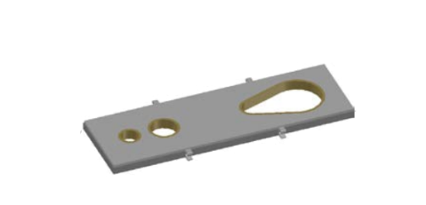

Built for Demanding Conditions
Our tundish application products are designed to perform reliably in environments where consistency, durability, and operational efficiency are essential.
Contact Us Today
(440) 386-4580
U.S. Refractory Products provides tundish application solutions designed to support efficient operation, dependable refractory performance, and long-term value in steel production environments.

Our tundish furniture products are developed to support dependable operation, improve refractory performance, and help customers achieve better consistency in production environments.
These solutions are designed with practical application needs in mind, helping operations reduce wear-related issues and improve long-term value.

Our tundish cover solutions are designed to provide dependable performance while supporting durability, product life, and efficient operation in demanding industrial use.
We focus on product solutions that help customers improve refractory effectiveness and reduce unnecessary maintenance over time.
Our tundish application products are designed to perform reliably in environments where consistency, durability, and operational efficiency are essential.
Each solution is developed to support better refractory performance, improved operational value, and more dependable long-term results.
We help customers choose the tundish application solution that best fits their production requirements and operating goals.
Our tundish application products are designed to help customers improve efficiency, control maintenance demands, and achieve more reliable refractory performance in real operating conditions.
We focus on practical solutions that support both immediate production needs and long-term performance goals.

Contact our team to discuss your operation and learn which tundish application solutions may best support your performance goals.